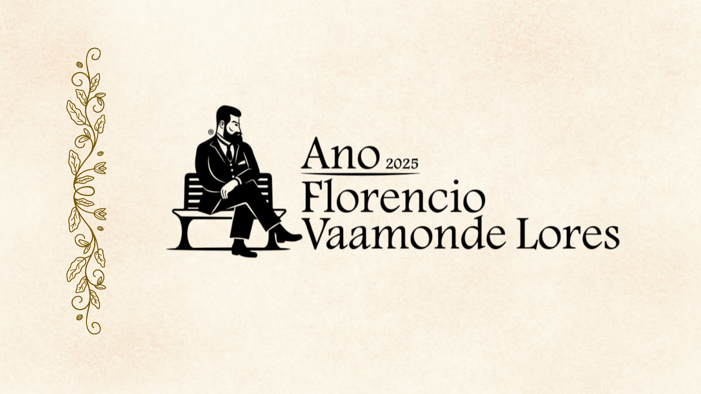
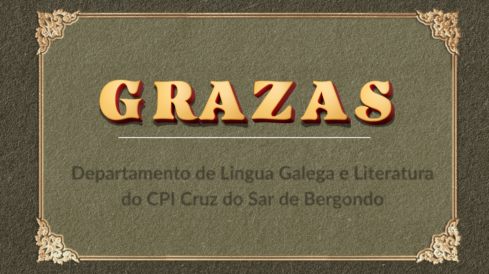

Dentro do Concello de Bergondo destacan moitos
lugares de interese natural como son as marismas ou as
praias de Gandarío, o Regueiro ou o Pedrido.
Tamén salientan bens de interese cultural: o Mosteiro
de San Salvador, o Pazo de Mariñán, a Ponte do
Pedrido, o edificio modernista da Senra xunto cun bo
número de pazos que atopamos espallados por todo o
seu territorio.
Bergondo ten nove parroquias, setenta e dúas entidades ou
lugares, e a densidade de poboación é de 190 habitantes por
quilómetro cadrado.
As parroquias son: Babío, Guísamo, Lubre, Rois, Vixoi,
Cortiñán, Moruxo, Bergondo e Ouces, onde naceu
Florencio Vaamonde Lores.
Ouces á súa vez divídese en: Cangas, O Casal, Cornide, Costa
de Ouces, Gandarío, A Lagoa, O Mato, Mesoiro, Reboredo, O
Río, Silvoso, Tatín e O Outeiro onde estaba a casa familiar da
familia Vaamonde.
Ouces e Florencio Vaamonde Lores
Florencio Vaamonde Lores naceu na
parroquia bergondesa de Ouces o 2 de
abril de 1860 no seo dunha familia
fidalga de tradición militar.
O seu pai era Juan Vaamonde Malvido,
capitán de Infantería que participou na
Guerra Carlista e foi premiado coa Cruz
Laureada de San Fernando como o
demostra este documento asinado pola
raíña Isabel II.
A súa nai era Brígida Lores Batell,
da que se conservan estes dous
retratos.
A continuación imos describir
unha serie de lugares que foron
importantes para o noso
homenaxeado.
A casa familiar
Esta é a casa familiar da familia Vaamonde Lores. Sitúase no
lugar do Outeiro número 5 aínda que antigamente tiña o
número 3.
Foi propiedade dos pais de Florencio ata 1878, ano no que
por diversos motivos, a familia deixou Ouces e marchou vivir
á Coruña.
Nela vivía o matrimonio formado por Juan Vaamonde
Malvido e Brígida Lores Batell cos seus fillos.
César Vaamonde describiu así a propiedade:
La casa es la señalada actualmente con el número 3 y pertenece a la parroquia de
Ouces. Tiene unidos la huerta y heredades todo ello de 30 ferrados de estensión:
dicha casa está dentro de la finca, un poquito retirada de los caminos que de
Bergondiño y Lubre, juntándose cerca de su portal, conducen a Cangas. Recayó en los
Vaamondes por línea de los Outeiros y Sotos. Los documentos más antiguos que he
hallado referentes a ella, son del año 1518 [...].
Esta es, pues, la famosa casa, en donde yo, mis hermanos, padre, abuelo, parientes
y antepasados de tantos siglos, han nacido, se criaron, y vivieron; en donde tantos
sucesos de familia se desarrollaron; en donde tantas fiestas, saraos, bailes y reuniones
tuvieron lugar; casa que era famosa en todas las mariñas visitadísima de toda clase
de personas; y cuya huerta y jardines llamaban la atención en toda la comarca y aún
fuera de ella. Hoy todo ha cambiado[...].
Infancia de
Florencio
Vaamonde Lores
Desde o seu nacemento o dous de abril de 1860 ata que tiña
18 anos, Florencio Vaamonde Lores viviu nesta casa do
Outeiro en Ouces arredor da cal están os seus lugares
favoritos: a fonte do Picho, a fonte da Curuxa, os castros, o
Roibal...
Estudou na escola do Outeiro e gustáballe escribir apoiado ao
pé dun castiñeiro que había enfronte da súa casa.
Moitos dos seus poemas lembran esta época feliz.
Revista Gallega, 56, 5-IV-1896.
La Idea Moderna, 9-V-1901.
Mágoas, 1901.
A Nosa Terra, 218, 1-XI-1925.
Nestes anos de infancia e mocidade vividos no lugar do
Outeiro foi moi estreita a relación cos tíos paternos: José
Vaamonde Malvido (comandante) e a súa muller Isidora
Castro Arias.
Os tíos vivían enfronte da casa familiar, neste lugar onde hoxe en día se
asenta unha nova construción. O terreo pertencía á familia desde tempos
tan antigos como a casa principal e debaixo das súas murallas está a fonte da
Curuxa, lugar importante para Florencio e os seus irmáns.
A casa dos tíos
Tamén tiñan moito trato con Dolores
Vaamonde Malvido, a tía paterna.
Imos describir algúns dos lugares de Ouces que
foron importantes para Florencio e que aparecen
reflectidos en moitas ocasións na súa obra.
Fonte do Picho
Na parte baixa da casa familiar está a fonte do Picho. César, un dos
irmáns de Florencio, deixou escritos uns datos interesantes:
Dentro de la huerta de esta casa se halla la fuente del Picho,
fuente sumamente curiosa por su valor histórico, pues sirvió de punto de
partida al Rey Don Alonso IX de León para trazar los límites de las
parroquias de Morujo y Daens al conceder al Monasterio de Bergondo
todo cuanto a dicho Rey pertenecía dentro de los términos de dichas
feligresías, según privilegio otorgado en la Coruña el día Santo de la
Pascua, en el mes de Abril del año 1218. […]
Antiga escola
Florencio Vaamonde cursou os seus primeiros estudos na escola do
Outeiro, onde sitúa algúns dos personaxes da súa novela Anxélica
ambientada na aldea natal. Un fragmento desta di:
Un día, por casualidade, D. Fernando atopou con Xuan de Vilardefrancos
n’un xardín de París e alegrouse moito de o ver e recordar os tempos de
nenos en que xuntos andaban â escola no Outeiro.
O autor indica dentro da propia obra que ese foi o seu primeiro centro
de aprendizaxe e ofrece un agarimoso recoñecemento ao seu mestre
natural da parroquia bergondesa de San Cidre:
A
casa onde andou â escola o humilde autor de este libro, baixo a dirección
dun celoso e competente mestre, ¡Xuan Varela de San Cidre! se alá na
misteriosa morada da noite e do silencio donde repousas, podese chegar a
voz de un vivente, recibe o meu saudo. Sen il, a quen debo o primeiro insiño,
eu non podería atinxir a maiores estudos, e tal ves non podería escribir esta
verídica historia.
César Vaamonde, que se encargou de poñer unha notas á novela
que seu irmán deixou inédita, indicaba ao respecto:
A escola de Outeiro, sita na parte correspondente a Ouces, ten de
existencia no mesmo lugar por riba de 200 anos, sendo tal vez a máis
antiga de Galicia. Oxe è unha escola pública destinada a dar o isiño
somente aos nenos e nenas das parroquias de Ouces e Lubre.
Grazas á recente colaboración da veciñanza de Ouces puidemos
localizar esa antiga escola, que estaba preto do que hoxe
coñecemos como Centro Social “Antonia Pato Pardo”.
Fonte da Curuxa
Na fonte da Curuxa a familia Vaamonde debeu pasar
moitos e bos momentos. Está situada debaixo das
murallas da casa dos seus tíos e Florencio compúxolle
este soneto:
Revista Gallega, 94, 20-XII-1896.
La Idea Moderna, 26-IV-1901.
Mágoas, 1901.
Vida adulta de
Florencio
Vaamonde Lores
Cando Florencio tiña 18 anos, en 1878, a familia marcha
vivir á Coruña.
Florencio tivo que facer as maletas, e coas súas lembranzas
do Outeiro, de Ouces e de Bergondo, marchou á cidade
herculina.
Alí viviu cos seus pais e cos seus irmáns.
Esta fotografía é do ano 1879 e nela
podemos ver os irmáns Vaamonde Lores
xuntos.
Nesta época Florencio sentía unha gran
nostalxia polos primeiros anos na súa
aldea, e esa sensación aparece reflectida
na súa obra poética.
1879
Florencio volveu a Ouces nas fins de semana e nos
períodos de vacacións, pero non regresou á casa onde
nacera, nin tampouco ao lugar do Outeiro, senón que se
instalou noutra vivenda coñecida como a Casa do Río.
A CASA DO RÍO
Florencio podía contemplar desde aquí o cume de dous grandes
castros: o de Bergondo e o de Reboredo, e a estas antigas
construcións, por onde tanto lle gustaba camiñar, dedicoulles
varios poemas.
OS CASTROS
El Eco de Mugía, 21, 13-IX-1903.
Galicia (La Habana), 2, 10-I-1904.
O Roibal
A Florencio tamén lle gustaba camiñar pola zona cercana á
Casa do Río, coñecida como O Roibal. Ás veces paseaba só
e outras facíao cos seus cans.
Este poema titulado Desejos expresa perfectamente as
vivencias do poeta bergondés e nel hai un recoñecemento
da historia, da paisaxe e da identidade das xentes do lugar
en termos moi semellantes á poesía de Pondal, e á ideoloxía
do Rexionalismo.
DESEJOS
A Nosa Terra, 26, 12-II-1908.
Follas ao vento, 1919.
Na Coruña a familia viviu
moitos anos nunha casa da
rúa Santo Domingo da que
se conserva esta fotografía
na que están Luísa e César
Vaamonde Lores con
Antonio Iglesias.
Na cidade herculina Florencio traballou como
funcionario de Facenda e xunto con Manuel Murguía
ou Eduardo Pondal formou parte dun grupo de
rexionalistas que defendían que Galicia e o galego
tivesen máis importancia na política e na cultura.
Converteuse nun intelectual moi sabio, coñecedor
dos clásicos grecolatinos, e a súa paixón pola
tradición literaria e o seu compromiso pola
recuperación e dignificación da lingua galega
marcaron toda a súa vida.
Destacou tamén pola súa personalidade
tímida, reservada e discreta, algo que se
ve reflectido nos seus ollos e fainos
destacar que era un home algo solitario
que prefería quedar nun segundo plano,
sen destacar.
Así, centraba os seus esforzos na
construción cultural e no legado literario,
máis que na actividade pública ou política.
Fotografías familiares
Luísa (Ouces, 1863)
Carlos (Ouces, 1870)
César (Ouces, 1869)
Emilia (Ouces, 1872)
Florencio (Ouces, 1860)
Os irmáns Vaamonde Lores
Aquí aparecen os irmáns Vaamonde Lores cos seus sobriños,
os fillos de Carlos: sentada está Luísa con Roberto, ao lado
César con Brigada no seu colo e diante Carlos. De pé cos
brazos cruzados vemos a Florencio, e ao seu lado a súa irmá
Emilia. Diante deles os rapaces Javier e Jaime.
Esta imaxe é do 13 de setembro
de 1925, a última fotografía que
se conserva de Florencio e na
que está cos seus irmáns César,
Luísa e Emilia xunto con outras
persoas.
Obra literaria
Desde o punto de vista literario Florencio Vaamonde Lores foi unha
figura fundamental de finais do século XIX, un home valente que cría
que o galego podía chegar tan lonxe coma o latín ou o grego.
Florencio foi moitas cousas: poeta, narrador, ensaísta, tradutor e
historiador. Cultivou practicamente todos os xéneros literarios, menos o
teatro, e sempre empregou unha linguaxe culta e coidada. Pero o máis
destacable foi o seu compromiso co prestixio do galego. Nun tempo no
que moita xente desprezaba a nosa lingua, el apostou por empregala
sempre.
Un dos seus actos máis valentes foi traducir ao galego obras clásicas
como As odas de Anacreonte e aínda que moita xente rexoubou del,
dicindo que o galego non era unha lingua “de nivel” para traducir
clásicos, el respondeu á crítica con feitos: máis libros, máis traducións e
máis traballo serio.
Na poesía seguiu o camiño de Eduardo Pondal. En 1894 publicou
Os Calaicos, que é un poema épico en galego que conta as fazañas de
María Pita e logo chegaron Mágoas en 1901 e Follas ao vento en 1919.
E por se fose pouco, descubríronse despois máis de cen poemas seus,
moitos en forma de soneto, un estilo que el dominaba á perfección.
Escribía cun estilo moi coidado. Era un verdadeiro artesán da palabra e
en prosa tamén deixou pegada con novelas como Bestas Bravas e
Anxélica, nas que retrataba a vida do rural galego con moita
sensibilidade e realismo.
Como historiador tamén foi pioneiro. O seu Resume da Historia de
Galicia foi un traballo adiantado ao seu tempo e non esquezamos a súa
faceta de investigador con artigos sobre arqueoloxía, etnografía e
historia local, colaborando con xornais como La Fidelidad, Revista
Gallega ou El Tribuno.
Ouces e o Outeiro
na súa obra literaria
Aldarete
Algo moi curioso é que Florencio empregaba varios pseudónimos
para asinar os seus traballos e non sempre aparecía co seu nome
verdadeiro. Tiña unha chea de alcumes literarios que creaba a través
da toponimia. Por exemplo, co nome de Pedro de Aldarete asinou un
soneto e tomou ese nome dun terrreo cercano á súa casa.
Para os artigos históricos asinaba como Xan de Ouces. E tamén
empregou nomes como Fulvio Vergodense ou Xan Silvoso de
Bouzós.
Facía isto por varias razóns: para separar os diferentes temas das
súas obras, para opinar con liberdade sen medo ás críticas, e tamén
para darlle un toque de misterio á súa figura.
E isto permitíalle a Florencio publicar nun mesmo número dunha
revista varios dos seus artigos ou composicións e aparentemente o
público lector vería diferentes autores ou persoas colaboradoras.
Pedro de Aldarete
Manuscrito s.d., Museo de Pontevedra.
Almanaque Gallego (Bos Aires), 1904.
A Nosa Terra, 58, 14-X-1908.
Aires da Miña Terra (Bos Aires), 31, 6-XII-1908.
HIMNO A GALICIA
Mecanoscrito, 20-V-1907 (RAG).
Dobarro, Xosé Mª (2001), Album literario 1907, UDC.
O seu traballo foi enorme, pero durante moito tempo estivo case esquecido. Por
sorte, hoxe está a ser redescuberto. Libros como Historia de Betanzos
e o seu Resume da Historia de Galicia foron recuperados e cada vez hai máis persoas
centradas no seu estudo como Isabel Seoane, Teresa Amado ou Alonso
Montero.
Foi nomeado fillo predilecto e distinguido de Betanzos, aínda que a título
póstumo, e merecería ser lembrado no Día das Letras Galegas porque foi un
verdadeiro adiantado ao seu tempo.
Florencio foi dos primeiros que demostrou que o galego era unha lingua válida
para calquera ámbito: historia, filosofía, poesía ou literatura clásica, e, sobre
todo, abriu camiño para moitos escritores e intelectuais que viñeron despois.
Grazas a el, o galego comezou a ocupar o lugar que lle corresponde na cultura.
Foi un exemplo de paixón, valentía e amor pola nosa terra. E un orgullo para
Bergondo!
Político e activista cultural
Durante a etapa coruñesa Florencio Vaamonde traballou en
Facenda e entrou en contacto con Manuel Murguía, con Eduardo
Pondal e xunto co círculo dos rexionalistas coruñeses que se
reunían na Cova Céltica, converteuse nun político e nun activista
cultural ao que lle gustaba traballar desde a discreción.
En 1906 creouse a Real Academia Galega, da cal formou parte
como membro numerario desde a data da súa fundación. Tamén foi
membro fundador da Liga Gallega, das Irmandades da Fala e de
Solidaridad Gallega, entidades de ideoloxía rexionalista, e formou
parte do consello de redacción da Revista Gallega.
Florencio Vaamonde (á esquerda) como membro do
consello de redacción da Revista Gallega.
Florencio e a Real Academia Galega
José Ogea, Manuel Murguía, Manuel Curros Enríquez e Andrés Martínez Salazar. De pé aparecen
Uxío Carré, Florencio Vaamonde Lores, Francisco Tettamancy e Eladio Rodríguez.
Florencio Vaamonde Lores continuou a carón dos seus
compañeiros no camiño da dignificación da lingua e da cultura de
Galicia participando na fundación da Real Academia Galega e
presenciou, no salón da Reunión Recreativa e Instructiva de
Artesanos da Coruña, a inauguración solemne da Institución o 30
de setembro de 1906, sendo Manuel Murguía o presidente; Uxío
Carré Aldao, o secretario e Xosé Pérez Ballesteros, o tesoureiro.
Xesús Alonso Montero, presidente da RAG entre 2013 a 2017,
definiu a Florencio como un tradutor solitario anticipando a
aposta que máis adiante, coa Xeración Nós, se asumiría de xeito
xeneralizado entre os estudosos do idioma.
Mágoas, 1901.
Florencio e as
Irmandades da Fala
O 18 de maio de 1916 Antón Villar Ponte convoca unha xuntanza nos
locais da Academia Galega á que asistiron arredor de 20 persoas,
entre as que se encontraban Florencio Vaamonde Lores, Manuel
Lugrís Freire ou Ramón Vilar Ponte, entre outros.
Nesta xuntanza acordouse a creación da primeira Irmandade dos
Amigos da Fala que tería como obxectivo a defensa, exaltación e
fomento da nosa lingua. Nace así a primeira iniciativa consciente de
normalización do idioma galego e axiña se foron creando outras en
Santiago, Monforte, Ferrol, ou Lugo.
A nova asociación crea a revista A Nosa Terra como voceiro onde
expresan as súas ideas e difunden a cultura do momento. Florencio
foi nomeado membro do consello de redacción e era un referente
intelectual para moitos dos asociados pola defensa que sempre fixera
de Galicia e da necesidade de normalizar a lingua.
Cal foi o labor de Florencio nas Irmandades da Fala?
Estivo presente na primeira xuntanza do 18 de maio de 1916, na
que se acordou crear a primeira Irmandade dos Amigos da Fala.
Nunha carta a Antón Villar Ponte expresa tanto o seu pesimismo
sobre a consecución das ideas, como o seu compromiso (“eu serei
sempre … un máis a sumarse a todo o que tenda en pro da
rexeneración de Galicia”) para colaborar.
Asesorou a Lugrís Freire nas clases de lingua galega que se
impartían na Real Academia Galega (que tamén serviu como sede
da Irmandade da Coruña ata 1918).
Foi citado por Antón Villar Ponte no folleto inicial das Irmandades,
como unha das figuras destacadas na defensa da galeguidade.
A GALICIA
Revista Gallega, nº 57, 12-4-1896.
Florencio faleceu na Coruña o 19 de outubro de 1925 e foi
enterrado no cemiterio de Santo Amaro. Uns días máis tarde, na
Capela de San Gregorio a familia celebrou as honras fúnebres polo
seu descanso.
O seu irmán César describe o lugar con estas palabras:
A capela de San Gregorio ou do Casal foi fundada por dona Margarida
Vallo, muller de don Gregorio Pazos en 1652. No seu frontis campean,
nun escudo, as armas da familia que se repiten nun retablo
churrigueiresco no interior do tempo.
Florencio, que acostumaba pasear por esta zona e visitar a capela,
compuxo un soneto onde dialoga coa Morte.
Capela de San Gregorio
El Regional 13-I-1894.
El Eco de Galicia (La Habana), 17-II-1894.
La Idea Moderna 24-IV-1901.
Mágoas, 1901.
A Nosa Terra, 120, 25-V-1920.
No centenario do seu pasamento, rendemos homenaxe a Florencio Vaamonde Lores
(Ouces, 1860 – A Coruña, 1925), escritor, tradutor e activista cultural, ponte entre o
Rexurdimento literario e as Irmandades da Fala.
Cultivou o xénero lírico (Os Calaicos, Mágoas, Follas ao vento), publicou novelas (Anxélica,
Bestas Bravas), destacou polos seus estudos históricos, ensaísticos, e foi precursor na
tradución ao galego dos clásicos grecolatinos (Odas de Anacreonte).
Foi membro fundador da Real Academia Galega, participou na creación de entidades como
as Irmandades da Fala e tomou parte en diversos faladoiros literarios como os da Cova
Céltica da Coruña onde compartía espazo con Eduardo Pondal e Manuel Murguía, entre
outros.
Aínda que viviu a maior parte da súa vida adulta na Coruña, nunca perdeu o vencello coa
súa terra natal: a parroquia de Ouces. Bergondo non só foi o lugar de nacemento, senón
tamén o seu berce espiritual, onde se alimentou da cultura popular, da lingua e da
memoria histórica que inspiraron a súa traxectoria vital, literaria e galeguista.
Hoxe, lembramos a Florencio Vaamonde Lores como un símbolo de identidade de
Bergondo e como un elo vivo entre o seu pasado e o seu futuro.
O noso agradecemento:
Á familia Vaamonde Lores, a Isabel Seoane Sánchez e a Teresa
Amado Rodríguez pola cesión das fotografías e por facilitarnos a
documentación necesaria para poder elaborar esta presentación.
A Pura Galán Boutureira, Natalia Lodeiros Souto e Pilar Mingote
Adán pola súas achegas.
A todas as persoas que compartiron connosco esta aventura.
Ao alumnado de Oratoria do CPI Cruz do Sar de Bergondo pola
súa implicación neste traballo de investigación e creación.
Moitas grazas!!! Marta Pumares Varela


Departamento de Lingua Galega e Literatura
do CPI Cruz do Sar de Bergondo